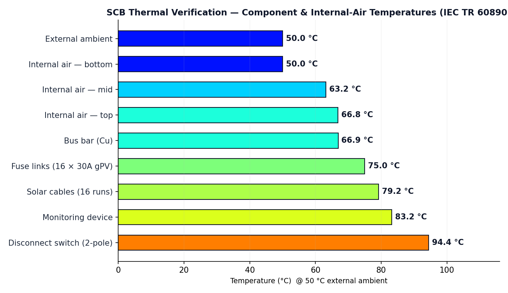
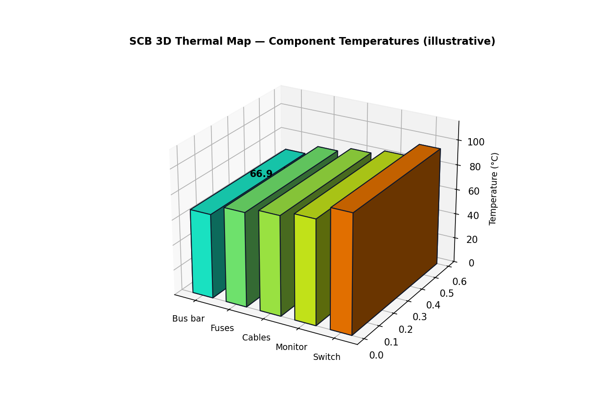

Evidence-led enclosure temperature-rise verification by calculation (IEC TR 60890 / IEC 61439-1) for a 16-input IP66 FRP string combiner box — delivered as an interactive report and a 3D thermal visualization.
Solar DC combiner boxes concentrate fuse links, copper busbars, disconnectors and monitoring electronics inside a sealed IP66 enclosure. At a 50 °C site ambient, the margin to the 85 °C rating of typical components is narrow. Loss values arrive from separate datasheets and engineering assumptions, and an FRP enclosure does not dissipate heat like the sheet-steel enclosures the standard method assumes. A full laboratory type-test is costly — so teams need a calculation they can review before procurement.
Fuse, cabling, switch and auxiliary losses come from separate sources, each with different evidence quality.
IP66 FRP walls dissipate less heat than sheet steel, raising the internal temperature rise for the same loss.
Teams need a loss register, temperature results and missing-data flags — not an unjustified compliance badge.
Turn a bill of materials, an enclosure definition and an ambient condition into a reviewable thermal verdict — with every number tagged by evidence quality.
Every heat source listed with its power loss, classified as published, assumed or missing.
Effective cooling surface from dimensions and installation, plus an FRP wall-conduction correction.
IEC TR 60890 non-ventilated curve for internal air at bottom, mid-height and top.
First-order P/(h·A) estimate added to the local air temperature for each component.
The verdict is blocked when the BOM is incomplete or losses are not datasheet-backed.
A thermal map colours every component on a jet scale for rapid design review.
Fully client-side — no backend, no sign-up, no data leaves the browser. Open either demo, interact, and review the evidence trail.
| Output | Value | Evidence |
|---|---|---|
| Total power loss | 64.6 W | assumed |
| Effective cooling surface Ae | 1.929 m² | calculated |
| Internal air — bottom / mid / top | 50.0 / 63.2 / 66.8 °C | calculated |
| FRP correction factor | 1.077 | engineering adj. |
| Hottest component (disconnect switch) | 94.4 °C | screening |
| Verification verdict | — | BLOCKED |
The verdict is intentionally blocked because the sample losses are "approx." (0 % datasheet-backed). This is the workflow working correctly: it refuses to print a false pass.


Any component with a known watt loss, regardless of manufacturer, tagged by evidence quality.
Internal air rise at bottom, mid-height and top, with enclosure constant k, distribution factor c and exponent.
First-order wall-conduction adjustment against the sheet-steel reference (factor 1.077).
Per-component P/(h·A) estimate layered onto the local air temperature.
Blocks a "verified" verdict when essential evidence is absent — no false pass.
Jet colour scale, orbit/zoom, hover tooltips, labels, legend and auto-rotate.
This is a conceptual user journey only — it is not an implementation, API, or service-topology disclosure.
| Reference | Usage |
|---|---|
| IEC TR 60890 / IEC 61439-1 | Referenced standards (© IEC); not reproduced in this repository. |
| ETI gPV fuse links | Published dissipation endpoints used to cross-check fuse self-heating. |
| Trinity Touch 16-in-1 combiner | Public product specification used as a reference product. |
| Three.js (MIT) | WebGL library for the 3D thermal visualisation. |
Full details in ATTRIBUTIONS.md. This showcase has not been commissioned or endorsed by the referenced standards bodies or manufacturers.
Working with switchgear enclosures, solar combiner boxes, or other assemblies that need defensible thermal verification? Explore the live demos, then discuss a private engineering engagement.
Explore the portfolio Contact NebulaCloud Studio